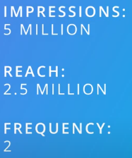

-->The online advertising industry is 80$ billion industry in the U.S alone and it's still growing
-->Nowadays publishers mostly run ad formats that are approved by the IAB under certain guidelines

-->Display banners are the most common format in display advertising
-->Dynamic ads have definitely evolved but some ot them now showing full video
-->when ad plays in line in an online video player for instance on youtube, we refer to it as video ad
When video ad is embedded in video, it's also referred to as a VPAID creative which stands for(Video player Ad interface definition)
VPAID non linear-->creates overlay the video player without pausing the video and don't fill the entire video player, when user clicks a non-linear ad, the video can be paused and the ad can expand
-->Video advertising is very popular these days partly because, it allows for rich creative experiences but also, because users consume an increasing amount of video on mobile devices, as a result advertisers have started to shift some of their TV advertising budgets into online video advertising

-->The best know examples of native ads are, promoted posts in facebook or sponsored tweets they basically look exactly like the content you would organically find on these platforms but someone paid to give their message priority over organic versions
So, why do we see all these native ads?
Ans: There are a few reasons for their popularity, there are many display ads out there, some good, some great and some outright bad some of these bad ads have left a salt taste in users mouths, so an increasing number of users have decided to use software to block the display ads, That's of course making advertisers nervous so they're looking for other ways to still get their message in front of users, native ads because it's integrated into the content cannot be blocked, with an ever increasing amount of content being consumed on mobile platforms
-->Some advertisers, especially the advertisers looking to convert users to action, are disappointed with the number of clicks they fet from display ads many of them have found that clicks on native ads are just higher
-----------------------------------------------------------
Metrics for Display Advertising
Here are the common metrics you will hear marketers talk about in reference to display ads:
Number of Impressions: The number of times an ad is shown
Number of unique impressions: The number of unique users to whom the ad was shown - so when you show the same ad many times to one user, it would only count as one unique impression
Click through Rate (CTR): the number of clicks that your ad receives divided by the number of times your ad is shown
Click to conversion rate (CTC): CTC is the number of clicks that convert to your desired objective (e.g. a sale) divided by all the clicks you received.
Engagement or Interaction Rate: the percentage of ad impressions that had at least one interaction or engagement (interactions could be: playing a video, clicking a link in the ad etc.)
View Through Rate (VTR): the number of completed views of a skippable ad over the number of initial impressions - so it really refers to the percentage of people that saw your entire ad.
View-through Conversion (VTC): a measure of the number of online conversions that happened within 30 days after a user saw, but did not click, a display ad. So, in this case, we are talking about users who saw your ad, and then later show up on your website.
Click Through Rate and Click to Conversion Rate are metrics especially important to direct response advertisers. Brand advertisers will have less interest in click through rates, but since they are often using rich media ads like for instance video, they will look at Engagement Rate and View Through Rates more.
------------------------------------------------------
1. Performance based pricing:
Under this model, the advertiser pays the publisher for ‘conversions’. These conversions could be:
Clicks: the user clicks on an ad, which results in a visit to the associated landing page. The advertiser only pays if the click happens. We refer to the price paid as the ‘cost per click’ or CPC.
Actions: the conversion could also be more than the click, the advertiser may want to see a certain ‘action’ - usually, the desired action is a sale or a subscription. Advertisers would then only pay when the desired action happens. The price of the ad is then calculated as a ‘cost per action’ or CPA.
You will find only a few publishers that accept CPA pricing. Usually, the publisher feels that they cannot guarantee the action that ultimately happens on the advertiser’s site. If the landing page is no good, the conversion may not happen at all, and the publisher does not want to be on the hook for that.
2. Impression Based Pricing:
A second pricing model is the very common impression based pricing. In that case, the advertiser buys impressions from the publisher, where every impression is considered an opportunity to display an ad to the user. The advertiser is charged on a Cost Per Thousand Impressions basis, also referred to as CPM or cost per mille.
----------------------------------------------------------
Reach and frequency

-->Advertisers want to strike the right balance between reach and frequency, you don't want frequency to be too high because that's a waste
What is optimal frequency?

Targeting Ads
1-Demographic Targeting
-->Adverisers want to put their ads in front of users whose behavior reveals that they may have an interest in the advertisers product, The behavior of the targeting is based on could be things like visiting certain websites, having bought products online, having put a product in a shopping basket online etc
where is data come from?
Ans: Data stream that's generated while browse the internet, you could think of it as a user's digital DNA, As a user, the more you move around the digital space, the more detailed your digital DNA becomes, a lot of the data is collected by publishers and third parties by means of cookies and unique device identifiers, advertising platforms make it possible to find the users that have the right DNA or people with characteristics you find important as an advertiser

-->Behavioral targeting is super powerful and it's really unique to online media
Re-targeting-->targets users who were already at a desired or the action stage of the customer journey but somehow did not go all the way through completing the conversion for instance, they started checking out a product but then ended up not buying, the idea behind re-targeting is that users who got this far in the customer journey and left may just need a little nudge to go back and pick up where they left off
-->So, through the same data mechanism as we described before using cookies and unique ID's to specific users who left their path to conversion are targeted to get ads that have a very specific message for them, sometimes, including the exact products they were checking out when they were on the advertiser site
-----------------------------------------------------------------------------------------------
Display Advertising Related Concerns
Adblocking
Unfortunately, not all display ads are great, and sometimes they can become annoying to users. Also, sometimes the advertising servers that serve the ads on websites are slow and they may slow down the loading of an entire site. While you will see that high-quality publishers don’t suffer from these problems as much, bad experiences have driven consumers to search for a solution, and some users feel they found that solution in Ad blockers. A recent study from the IAB found that as many as 26% of users block ads on the desktop (and about 15% on mobile). And the numbers are growing. That is worrying advertisers and as a result, they have started to add new formats and types of ads to their campaigns, like for instance native ads that can’t be blocked because they look like content.
The IAB has been very vocal about this issue, and it is appealing to its members, the advertisers, to be mindful of the consumer experience and provide users with relevant targeted ads so the user is not as eager to block the ads.
Viewability
Another advertiser concern related to display ads has to do with how the impressions get counted and which ads the advertiser has to pay for.
With the way ad serving works, the ad server fills up all the empty spaces designated for ads as soon as a webpage loads. However, when a user looks at a website, they don’t see the whole page immediately, as a part of the page falls ‘below the fold’ - which means that part of the page does not fit on the screen and the user has to scroll down to see it. The problem occurs when the ad server shows the ads as delivered, even if the user did not see the ads. So, the ads were not ‘viewed’.
Advertisers are now demanding viewability metrics, which provide numbers on ‘viewed impressions’, and advertisers only want to pay for those impressions. Publishers are doing efforts to produce those metrics and to make advertisers only pay for the viewed ads, but advertisers still feel these numbers are not super reliable, and they often still feel they are overpaying.
These are real concerns, and it is important to be mindful of them. However, display advertising is still a powerful mechanism to get a message across, especially if you are using the sophisticated behavioral targeting options it offers.